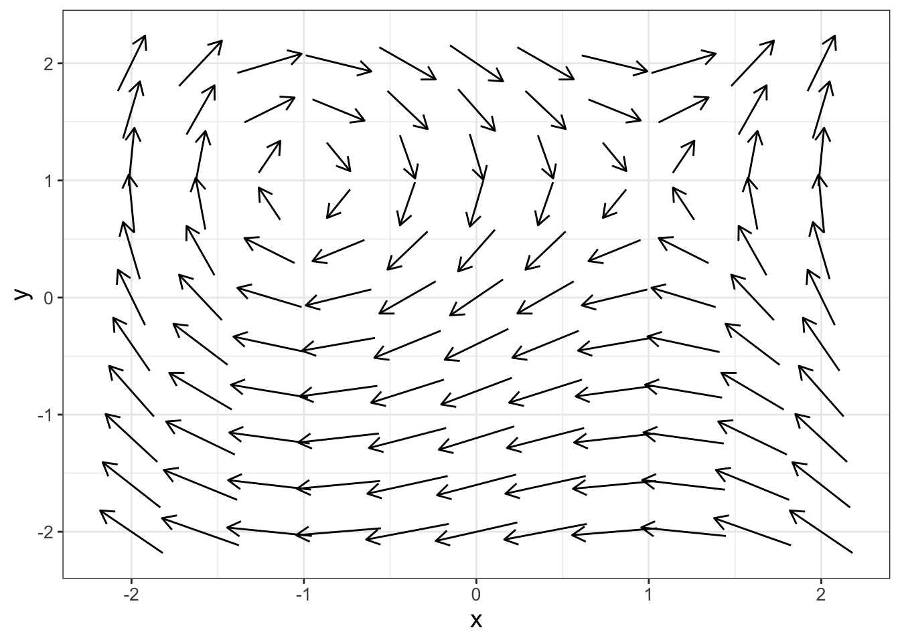
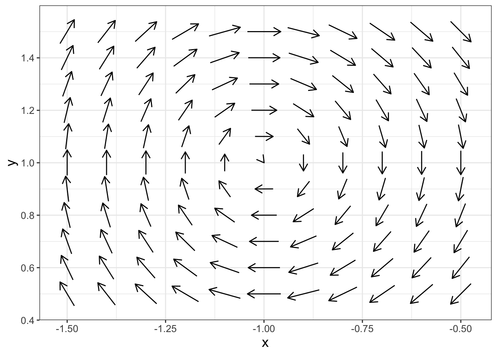
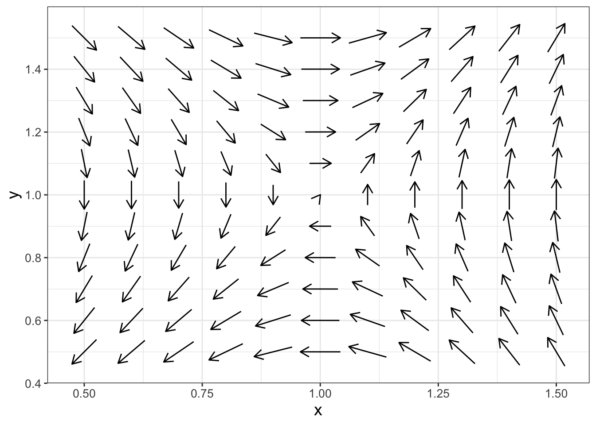
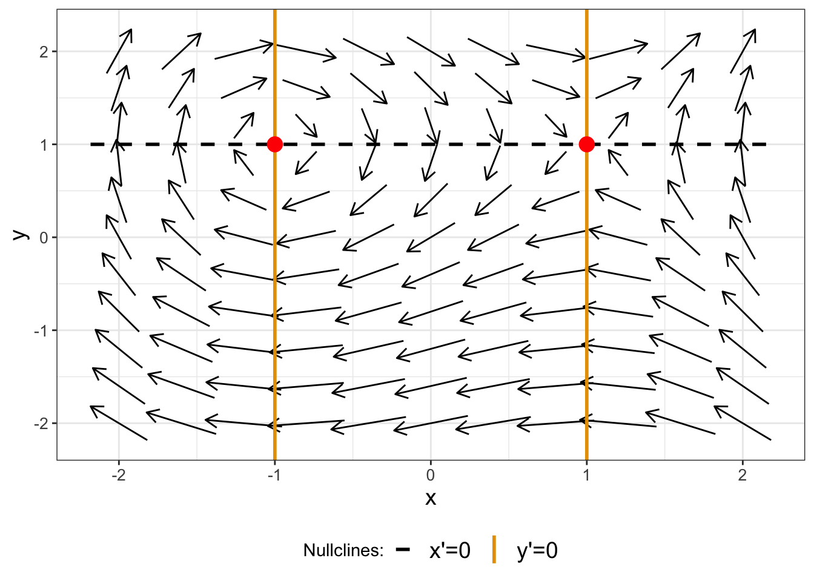
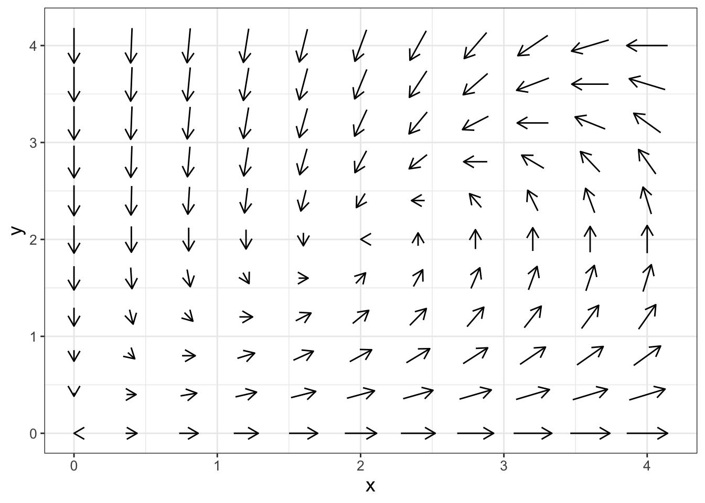

16 Systems of Nonlinear Differential Equations
16.1 Introducing nonlinear systems of differential equations
In Chapter 15 we discussed systems of linear equations. For this chapter we focus on non-linear systems of equations. We previously discussed coupled (nonlinear) systems of equations in Chapter 6. Consider the following nonlinear system of equations with the associated phase plane in Figure 16.1:
\[ \begin{split} \frac{dx}{dt} &= y-1 \\ \frac{dy}{dt} &= x^{2}-1 \end{split} \tag{16.1}\]
Wow! The phase plane in Figure 16.1 looks really interesting. We need to dig deeper to understand the phase plane better. Let’s get started!
Note
This chapter uses following libraries: ggplot2, and tibble (all part of the tidyverse) and demodelr. See Section 2.3 on how to install packages. Prior to running any code in this section, include library(tidyverse) and library(demodelr).
16.2 Zooming in on the phase plane
One way to investigate the phase plane is to zoom in on interesting chapters for Figure 16.1. In the upper left corner there is some swirling action, so let’s zoom in somewhat (remember you can adjust the window size in phaseplane with the option x_window and y_window):

Something interesting seems to be happening at the point \((x,y)=(-1,1)\) in Figure 16.2. Let’s take a look at what happens if we evaluate our differential equation at \((x,y)=(-1,1)\):
\[ \begin{split} \frac{dx}{dt} &= 1-1 = 0 \\ \frac{dy}{dt} &= (-1)^{2}-1 = 0 \end{split} \]
Aha! So the point \((-1,1)\) is an equilibrium solution. In later chapters we will discuss why we are observing the behavior with the swirling arrows. For now, the key point from Figure 16.2 is to recognize that nonlinear systems can have nonzero equilibrium solutions.
Next, there seems to be a second interesting point in the upper right corner of Figure 16.1. Let’s zoom in near the point \((x,y)=(1,1)\):

It seems like there is a second equilibrium solution at the point \((1,1)\)! Let’s confirm this:
\[ \begin{split} \frac{dx}{dt} &= 1-1 = 0 \\ \frac{dy}{dt} &= (1)^{2}-1 = 0 \end{split} \]
By zooming in on the phase plane we learned something important about nonlinear systems and how they might differ compared to linear systems. In Chapter 15 we learned that the origin is the only equilibrium solution for a linear system of differential equations. On the other hand, nonlinear systems of equations may have multiple equilibrium solutions.
16.3 Determining equilibrium solutions with nullclines
To determine an equilibrium solution for a system of differential equations we first need to find the intersection of different nullclines. We do this by setting each of the rate equations (\(\displaystyle \frac{dx}{dt}\) or \(\displaystyle \frac{dy}{dt}\)) equal to zero. Equation 16.1 has two nullclines:
\[ \begin{split} \frac{dx}{dt} = 0 &\rightarrow y-1 = 0\\ \frac{dy}{dt} = 0 & \rightarrow x^{2}-1 = 0 \end{split} \tag{16.2}\]
So, solving for both nullclines in Equation 16.2 we have that \(y=1\) or \(x = \pm 1\). You can visually see the phase plane with the nullclines in Figure 16.4, where we will add the nullclines and equilibrium solutions into the plot.

In Figure 16.4 we can see equilibrium solutions occur where a nullcline for \(x'=0\) intersects with a nullcline where \(y'=0\).
16.4 Stability of an equilibrium solution
The idea of stability of an equilibrium solution for a nonlinear system is intuitively similar to that of a linear system: the equilibrium is stable when all the phase plane arrows point towards the equilibrium solution. For Equation 16.3, the equilibrium solution at \((x,y)=(1,1)\) is unstable because in Figure 16.3 some of the arrows point towards the equilibrium solution, whereas others point away from it. For Figure 16.2 it is a little harder to tell stability of the equilibrium solution at \((x,y)=(-1,1)\). At this point we won’t discuss more specifics of determining stable versus unstable equilibrium solutions. If the phase plane suggests that the equilibrium solution is stable or unstable, then you have established some good intuition that can be confirmed with additional analyses.
16.5 Graphing nullclines in a phase plane
Let’s look at another example, but this time we will focus on generating graphs for the nullclines.
\[ \begin{split} \frac{dx}{dt} &= x-0.5yx \\ \frac{dy}{dt} &= yx -y^{2} \end{split} \tag{16.3}\]
Figure 16.5 shows the phase plane for this example. Can you guess where an equilibrium solution would be?
# Define the range we wish to use to evaluate this vector field
system_eq <- c(
dx ~ x - 0.5 * y * x,
dy ~ y * x - y^2
)
p1 <- phaseplane(system_eq, "x", "y",
x_window = c(0, 4),
y_window = c(0, 4)
)
p1
Notice how the code used to generate Figure 16.5 stores the phase plane in the variable p1 and the displays it. This will make things easier when we plot the nullclines. Speaking of nullclines, let’s find them:
\[ \begin{split} \frac{dx}{dt} = 0 & \rightarrow x-0.5yx = 0 \\ \frac{dy}{dt} = 0 & \rightarrow yx -y^{2} = 0 \end{split} \]
The algebra is becoming a little more involved. Factoring \(x-0.5yx = 0\) we have \(x \cdot (1 - 0.5 y) = 0\), so either \(x=0\) or \(y=2\). Factoring the second equation we have \(y \cdot (x - y) = 0\), so either \(y=0\) or \(x=y\). Notice how this second nullcline is a function of \(x\) and \(y\). The following code plots the phase plane (p1) along with the nullclines (try this code out on your own):
# Define the nullclines for dx/dt = 0 (red):
# x = 0
nullcline_x1 <- tibble(x = 0,
y=seq(0,4,length.out=100)
)
# y = 0.5
nullcline_x2 <- tibble(x = seq(0,4,length.out=100),
y=2
)
# Define the nullclines for dy/dt = 0 (blue):
# y = 0
nullcline_y1 <- tibble(x = seq(0,4,length.out=100),
y=0
)
# y = x
nullcline_y2 <- tibble(x = seq(0,4,length.out=100),
y=x
)
# Add the nullclines onto the phase plane
p1 +
geom_line(data = nullcline_x1,aes(x=x,y=y),color='red') +
geom_line(data = nullcline_x2,aes(x=x,y=y),color='red') +
geom_line(data = nullcline_y1,aes(x=x,y=y),color='blue') +
geom_line(data = nullcline_y2,aes(x=x,y=y),color='blue')For each nullcline we define a data frame (tibble) that encodes the relevant information so we can plot it. In order to accomplish this we defined a sequence of values ranging from the plot window of 0 to 4 for the other variable. For nullclines where \(y\) was a function of \(x\) we defined a sequence of values for \(x\) and defined \(y\) accordingly.
For Equation 16.3 the equilibrium solutions are \((x,y)=(0,0)\), \((x,y)=(2,2)\). You may be tempted to think that \((0,2)\) is also an equilibrium solution - however - \(x=0\) and \(y=2\) are equations for the \(x\) nullcline. It is easy to forget, but equilibrium solutions are determined from the intersection of distinct nullclines.
Now that we have seen how nonlinear systems are different from linear systems, Chapter 17 will introduce tools for analysis for the stability of equilibrium solutions.
16.6 Exercises
Exercise 16.1 In Equation 16.3, equilibrium solutions are \((x,y)=(0,0)\), \((x,y)=(2,2)\). Zoom in on the phase plane at each of those points to evaluate the stability of the equilibrium solutions. (Set the window between \(-0.5 \leq x \leq 0.5\) and \(-0.5 \leq x \leq 0.5\) for the \((x,y)=(0,0)\) equilibrium solution.)
Exercise 16.2 Consider the following nonlinear system of equations, which is a modification of Equation 16.1:
\[ \begin{split} \frac{dx}{dt} &= y-x \\ \frac{dy}{dt} &= x^{2}-1 \end{split} \]
- What are the equations for the nullclines for this differential equation?
- What are the equilibrium solutions for this differential equation?
- Generate a phase plane that includes all equilibrium solutions (use the window \(-2 \leq x \leq 2\) and \(-2 \leq y \leq 2\))
- Based on the phase plane, evaluate the stability of the equilibrium solution.
Exercise 16.3 Consider the following nonlinear system of equations:
\[ \begin{split} \frac{dx}{dt} &= x - .5xy \\ \frac{dy}{dt} &= .5yx-y \end{split} \]
- What are the equations for the nullclines for this differential equation?
- What are the equilibrium solutions for this differential equation?
- Generate a phase plane that includes all equilibrium solutions.
- Based on the phase plane, evaluate the stability of the equilibrium solution.
Exercise 16.4 (Inspired by Logan and Wolesensky (2009)) A population of fish \(F\) has natural predators \(P\). A model that describes this interaction is the following:
\[ \begin{split} \frac{dF}{dt} &= F - .3FP \\ \frac{dP}{dt} &= .5FP - P \end{split} \]
- What are the equations for the nullclines for this differential equation?
- What are the equilibrium solutions for this differential equation?
- Generate a phase plane that includes all the equilibrium solutions.
- Based on the phase plane, evaluate the stability of the equilibrium solution.
Exercise 16.5 Consider the following system:
\[ \begin{split} \frac{dx}{dt} &= y^{2} \\ \frac{dy}{dt} &= - x \end{split} \]
- What are the nullclines for this system of equations?
- What is the equilibrium solution for this system of equations?
- Generate a phase plane that includes the equilibrium solution. Set the viewing window to be \(-0.5 \leq x \leq 0.5\) and \(-0.5 \leq y \leq 0.5\).
- Based on the phase plane, evaluate the stability of the equilibrium solution.
Exercise 16.6 The Van der Pol Equation is a second-order differential equation used to study radio circuits: \(x'' + \mu \cdot (x^{2}-1) x' + x = 0\), where \(\mu\) is a parameter.
- Let \(x'=y\) (note: \(\displaystyle x' = \frac{dx}{dt}\)). Show that with this change of variables the Van der Pol equation can be written as a system:
\[ \begin{split} \frac{dx}{dt} &= y \\ \frac{dy}{dt} &= -x-\mu \cdot (x^{2}-1)y \end{split} \]
- By determining the nullclines, verify that the only equilibrium solution is \((x,y)=(0,0)\).
- Make a phase plane for different values of \(\mu\) ranging from \(-3\), \(-1\), \(0\), \(1\), \(3\). Set your \(x\) and \(y\) windows to range between \(-1\) to \(1\).
- Based on the phase planes that you generate, evaluate the stability of the equilibrium solution as \(\mu\) changes.
Exercise 16.7 (Inspired by Strogatz (2015)) Consider the following nonlinear system:
\[ \begin{split} \frac{dx}{dt} &= y-x \\ \frac{dy}{dt} &=-y + \frac{5x^2}{4+x^{2}} \end{split} \]
- What are the equations for the nullclines?
- Using desmos (or some other graphing utility), graph the two nullclines simultaneously. What are the intersection points?
- Generate a phase plane for this system that contains all the equilibrium solutions.
- Let’s say instead that \(\displaystyle \frac{dx}{dt} = bx-y\), where \(b\) is a parameter such that \(0 \leq b \leq 2\). Using desmos (or some other graphing utility), how many equilibrium solutions do you have as \(b\) changes?
Exercise 16.8 (Inspired by Logan and Wolesensky (2009)) Let \(C\) be the amount of carbon in a forest ecosystem, with \(P\) as the rate of increase in carbon due to photosynthesis. Herbivores \(H\) consume carbon on the following predator-prey model:
\[ \begin{split} \frac{dC}{dt}&=P- bHC \\ \frac{dH}{dt} &= e\cdot bHC-dC \end{split} \]
In the above equation, \(b\), \(e\), and \(d\) are all parameters greater than zero.
- What are the equations for the nullclines?
- Set \(e=b=d=1\). Plot the equations of the nullclines. How many equilibrium solutions does this system have?
- Determine the equilibrium solutions for this system of equations, expressed in terms of the parameters \(b\), \(e\), and \(d\).
Logan, J. David, and William Wolesensky. 2009. Mathematical Methods in Biology. 1st ed. Hoboken, N.J: Wiley.
Strogatz, Steven H. 2015. Nonlinear Dynamics and Chaos: With Applications to Physics, Biology, Chemistry, and Engineering. 2nd ed. Boulder, CO: CRC Press.